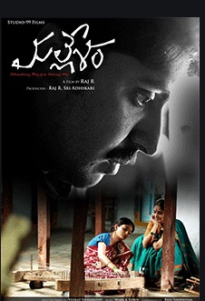

Mallesam
Mallesam is an inspirational real story of uneducated, poor, common man, who invented a machine for his mom, which is useful for weaving silk saree.
Hi....I pursued MSIT from JNTU, India in 2011. It is 2 years course. C,C++, Java, Data structures, Algorithms, DBMS, Webdesigning, Networking,Software System designing, Advanced programming(Pearl and Python)..etc are in first year of the curriculum. In the second year, I did specialization in E- Commerece. Because of family responsibilities, I had to stop my professional career before starting it seriously. Now I have time, so I would like to restart my career. When I started to revise my skills, fortunately I came to know about Launch code through WhatsApp local group. When I was doing MSIT and now also, if my mind is overloaded with coding I refresh myself by watching a movie. I like scientific, Sports, Animation, Inspirational and motivational movies. I would like to share few of my favorite movies.
Mallesam is an inspirational real story of uneducated, poor, common man, who invented a machine for his mom, which is useful for weaving silk saree.
3 Idiots is a comedy and drama movie. Story is about 3 friends. Two of them are searching for third one, who is the reason for their happy lives.
Ratatouillle is about a rat his name Remy, he has a dream to become a chef. the story about how he proves his talent with the help of a garbage boy.
Tinker Bell, animated fairy movie. All of the movies are the lessons about apologizing, friendships, and learning from one’s mistakes.
October Sky is a real story of a boy, who wants to be a scientist, and his father can not understand that. The story is about how he achieves his goal with the help of his friends and teacher after overcoming all the hurdles in his way.
After his failure at winning a gold medal for the country, Mahavir Phogat vows to realize his dreams by training his daughters for the Commonwealth Games despite societal pressures.